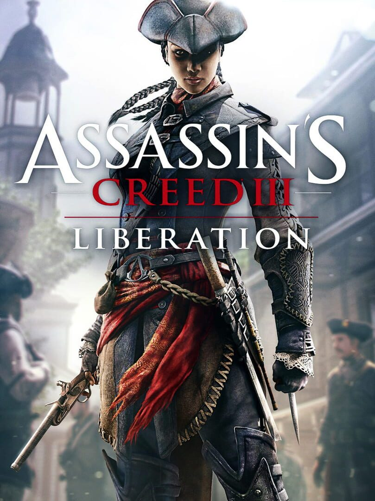

Assassin's Creed Liberation
Assassin's Creed Liberation
Details
|  | |
| Playtime | Not Played |
| Last Activity | Never |
| Added | 14/07/2023 17:53:02 |
| Modified | 18/05/2025 1:15:33 |
| Completion Status | Not Played |
| Library | Steam |
| Source | Steam |
| Platform | PC (Windows) |
| Release Date | 30/10/2012 |
| Community Score | 60 |
| Critic Score | 69 |
| User Score | |
| Genre | Adventure Hack and slash/Beat 'em up Strategy |
| Developer | Ubisoft Milan Ubisoft Sofia |
| Publisher | Ubisoft Entertainment |
| Feature | Multiplayer Single Player |
| Links | Wikia Wikipedia YouTube Official Steam Twitch |
| Tag | Action Action-Adventure Adventure Assassin Atmospheric Conspiracy Controller Exploration Female Protagonist Historical Multiplayer Open World Parkour Sci-fi Singleplayer Stealth Third Person |
Description
Introducing Assassin’s Creed® Liberation HD, the striking chapter of the pre-American Revolution Assassin’s Creed saga which arrives for the first time on HD consoles and PC. With improved gameplay, a deeper story, and HD graphics, Liberation is an immersive and full Assassin’s Creed experience.
The year is 1765. As the events leading up to the American Revolution heat up in the north, Spanish forces plan to take control of Louisiana in the south – but they have yet to reckon with Aveline, a deadly Assassin who will use every weapon and ability in her arsenal on her quest for freedom. . Whether eliminating her enemies with her multiple assassinations technique or luring them into deadly traps using her tools, Aveline strikes mortal fear into the hearts of those who stand in her way.
As an Assassin, Aveline soon finds herself on an unforgettable journey that will take her from the crowded streets of New Orleans to voodoo-haunted swamps and ancient Mayan ruins. She will play a pivotal role in the turbulent New Orleans revolution and the beginning of a new nation. As she fights for freedom, not for herself, but for those whose life and hopes have been squashed.
As Aveline, an Assassin of mixed French and African heritage, you must use your skill, instinct and weaponry – including a machete, poison-dart blowpipe, a whip and duelling pistols – to hunt down and eliminate your enemies.
EXPERIENCE THE UN-UNITED STATES OF AMERICA
Feast your eyes on a richly detailed world, thanks to the AnvilNext engine which features groundbreaking physics, animation and innovative combat system. Outmaneuver your enemies in the Louisiana bayou with the unique Tree Navigation system, and eliminate them from above with deadly precision. Deep dive under water as you search for lost Mayan treasures, but stay alert; the hostile wilderness and humid swamps are full of menacing animals.
COMPLETELY IMPROVED EXPERIENCE
Taking full advantage of its new hardware, Liberation HD introduces graphical improvements such as high-dynamic-range (HDR) rendering, high definition environments and characters, updated cinematics the sum of which delivers a complete graphic overhaul of the title. The gameplay experience has been revamped too with updated missions that improve the pacing, new missions that dive deeper into Aveline’s story, and updated world design for more gameplay options during mission. Finally, a particular attention was given to the audio with re-mastered music and all-new SFX.
The year is 1765. As the events leading up to the American Revolution heat up in the north, Spanish forces plan to take control of Louisiana in the south – but they have yet to reckon with Aveline, a deadly Assassin who will use every weapon and ability in her arsenal on her quest for freedom. . Whether eliminating her enemies with her multiple assassinations technique or luring them into deadly traps using her tools, Aveline strikes mortal fear into the hearts of those who stand in her way.
As an Assassin, Aveline soon finds herself on an unforgettable journey that will take her from the crowded streets of New Orleans to voodoo-haunted swamps and ancient Mayan ruins. She will play a pivotal role in the turbulent New Orleans revolution and the beginning of a new nation. As she fights for freedom, not for herself, but for those whose life and hopes have been squashed.
Key Features
AVELINE IS BACKAs Aveline, an Assassin of mixed French and African heritage, you must use your skill, instinct and weaponry – including a machete, poison-dart blowpipe, a whip and duelling pistols – to hunt down and eliminate your enemies.
EXPERIENCE THE UN-UNITED STATES OF AMERICA
Feast your eyes on a richly detailed world, thanks to the AnvilNext engine which features groundbreaking physics, animation and innovative combat system. Outmaneuver your enemies in the Louisiana bayou with the unique Tree Navigation system, and eliminate them from above with deadly precision. Deep dive under water as you search for lost Mayan treasures, but stay alert; the hostile wilderness and humid swamps are full of menacing animals.
COMPLETELY IMPROVED EXPERIENCE
Taking full advantage of its new hardware, Liberation HD introduces graphical improvements such as high-dynamic-range (HDR) rendering, high definition environments and characters, updated cinematics the sum of which delivers a complete graphic overhaul of the title. The gameplay experience has been revamped too with updated missions that improve the pacing, new missions that dive deeper into Aveline’s story, and updated world design for more gameplay options during mission. Finally, a particular attention was given to the audio with re-mastered music and all-new SFX.